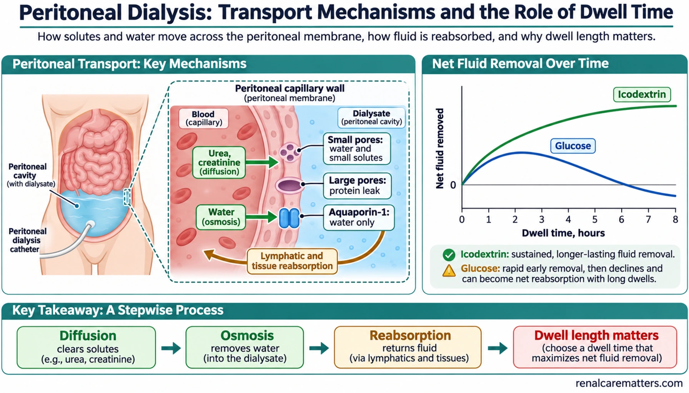
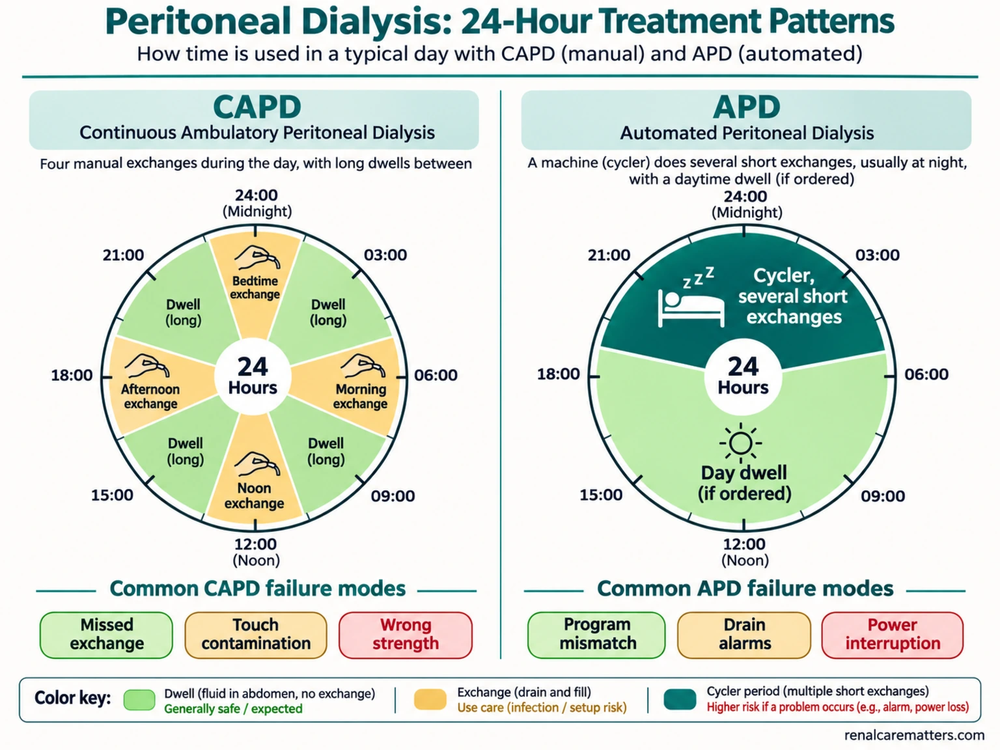

After this module you should be able to
- Explain diffusion, osmotic ultrafiltration and fluid reabsorption across the peritoneal membrane, and why each changes during a dwell.
- Explain why water removal and small-solute clearance can move in different directions in the same patient.
- Explain the role of residual kidney function in volume and solute control, and why its loss changes how you read a peritoneal dialysis (PD) record.
- Distinguish continuous ambulatory PD (CAPD) and automated PD (APD) by workflow, dwell pattern, equipment and failure modes.
- Separate what you observe, record and teach from what requires a prescriber’s order, and state when to escalate.
The big picture, in plain words
Most of what goes wrong in peritoneal dialysis (PD) is slow and quiet. A drain volume falls by a few hundred milliliters a day. Urine output halves over two months. Ankles swell a little more each week. Very little of it announces itself as an emergency. By the time the patient feels unwell, the problem has usually been visible in the diary for weeks.
That is the job of this module. You will learn enough physiology that small numbers mean something to you. You will learn the two ways PD is delivered and how each one fails. And you will learn where your decisions end and the nephrologist’s begin, so that you bring the whole pattern forward early, with numbers, instead of waiting for a crisis.
The picture has a limit. A tea bag does not pull water. PD solution does: its glucose, or icodextrin, draws water out of the blood by osmosis. And unlike a cup, the abdomen keeps absorbing fluid back into the body, through lymphatics and tissue, the whole time the solution sits there. So every PD dwell runs three processes at once: solute diffusion, osmotic water removal and steady fluid reabsorption. Each changes on its own clock. Most of what you read in a PD record is the balance among the three.
Figure 1 · Key terms for this module
Case: Positive numbers, rising weight
Aling Rosario, 58, a retired public-school teacher from Malolos, has been on CAPD for seven months with four 2-liter exchanges a day. Nurse Paolo reviews her diary at a routine clinic visit.
Every exchange shows positive net ultrafiltration, drain greater than fill. The daily total is about 600 mL, much as it was three months ago. Her daughter has written each number neatly in a school notebook.
But her morning weight has climbed 2.4 kg over five weeks. Her ankles pit to mid-shin. Her urine diary, which read about 700 mL a day when she started, now reads about 250 mL. She says she feels “a little heavy” and has started using a second pillow at night.
Before reading on, decide:
- Is a positive ultrafiltration total enough to call her volume status stable?
- What four questions would you ask before you call?
- What belongs to you, and what belongs to the nephrologist?
Keep your answers in mind. The lesson gives you what you need, and the case review near the end shows one sound response.
The physiology: three processes in one dwell
You do not need to calculate transport to be a good PD nurse. You do need a working model, because every number in the diary is the output of that model. Start with the membrane, then follow a single dwell from fill to drain.
The membrane is not a single sheet
The peritoneum is a large, folded membrane that lines the abdominal wall and covers the bowel. What actually limits transport is the wall of the small blood vessels beneath it. That wall behaves as if it has pores of three sizes.1
| Pathway | What crosses | Why it matters at the bedside |
|---|---|---|
| Many small pores | Water and small solutes such as urea, creatinine, potassium and glucose | Most clearance and much of the water removal |
| A few large pores | Proteins, including albumin | PD patients lose albumin into the effluent every day, which is one reason nutrition gets attention |
| Water-only channels (aquaporin-1) | Water without sodium | Explains the early “sodium sieving” of a strong glucose dwell |
This three-pore model is established physiology.1 It explains most of what follows.

Diffusion runs down a gradient that fades
At the start of a dwell, the dialysis solution contains almost no urea. The gradient between blood and solution is steep, so urea moves quickly. Within a few hours, the solution approaches the blood level and movement slows. Larger molecules diffuse more slowly and keep gaining for longer. This is why the prescriber chooses dwell length and the number of exchanges deliberately. A longer dwell does not keep cleaning at the same rate. It mostly gives the slow molecules more time.
Osmotic water removal also fades
Glucose draws water into the abdomen. But glucose is itself absorbed across the membrane into the blood, so the osmotic pull weakens as the dwell goes on. Early in a glucose dwell, about half of the water moves through the aquaporins and leaves sodium behind. That is sodium sieving, seen about one hour into a strong dwell.1
Meanwhile, reabsorption never stops. Lymphatics and the surrounding tissue keep taking fluid back into the body. Once the osmotic pull has faded, reabsorption wins. A long glucose dwell can therefore end with less fluid out than went in.
Icodextrin behaves differently. It is a large glucose polymer that is absorbed slowly, so it keeps pulling water through the small pores for many hours. That is why it is often prescribed for the long night dwell in CAPD or the long day dwell in APD.1 Whether a patient receives it is the prescriber’s decision.
Example: one night, two numbers
Mang Tonyo, 66, does four CAPD exchanges a day with glucose solution. His daytime dwells last about four hours. His night dwell lasts about nine hours, from 10 preventive maintenance (PM) to 7 AM.
| Exchange | Filled | Drained | Net UF |
|---|---|---|---|
| 7 AM (night dwell drained) | 2,000 mL | 1,850 mL | −150 mL |
| 11 AM | 2,000 mL | 2,250 mL | +250 mL |
| 3 PM | 2,000 mL | 2,200 mL | +200 mL |
| 7 PM | 2,000 mL | 2,250 mL | +250 mL |
| Day total | +550 mL |
The night dwell gave 150 mL back to his body. The day total still looks positive, so the problem is easy to miss. The pattern is exactly what the physiology predicts: the osmotic pull was spent long before morning, and reabsorption continued. Your job is not to change his solution. Your job is to notice that the long dwell is net negative, check that the diary was measured correctly, and report it with his weight, blood pressure and urine trend. The prescriber decides whether a different solution or dwell pattern is needed.
Water removal and clearance can move apart
A patient can have good urea removal and poor fluid removal, or the reverse. The difference often lies in how fast the membrane transports.
| Membrane pattern | Small solutes | Glucose gradient | What you may see |
|---|---|---|---|
| Fast transporter | Equilibrate quickly; good clearance in short dwells | Absorbed quickly; osmotic pull lost early | Poor drain after long dwells, rising weight, edema |
| Slow transporter | Equilibrate slowly | Kept longer | Good fluid removal in long dwells; clearance may be lower |
Consider two patients on the same four-exchange prescription. Ms. Divina drains well all day and her weight is steady, yet the team notes falling appetite and laboratory trends that suggest low clearance. Mr. Arnel feels well and eats normally, yet his night drains are always short and his ankles swell. Same prescription, opposite problems. The formal measurement behind this, the peritoneal equilibration test (PET), is the subject of Module 6. For now, remember that one good number does not prove the other.
Residual kidney function carries more weight than most nurses expect
Many people start PD still passing several hundred milliliters of urine a day. That urine removes sodium, water and middle molecules continuously, every hour, without any exchange. In observational studies, preserving it is associated with better survival in PD.2 The studies cannot show that protecting urine output causes the better survival, because patients who keep their urine differ in other ways. The direction is consistent, and the physiology makes it plausible.
When urine output falls, the patient loses a fluid-removal route that the PD prescription was never designed to replace. Do the arithmetic for Aling Rosario. Her urine fell from about 700 mL to about 250 mL a day. That is about 450 mL a day that must now leave by some other route, or stop coming in. Her exchange UF did not change. So the 450 mL stays in her body each day, and her weight tells you where it went.
What this means at the bedside
| Process | What normally happens | What weakens it | What you may notice |
|---|---|---|---|
| Diffusion of small solutes | Gradient steep early, flattens over hours | Missed exchanges, short total therapy time, membrane change, low drain volume | Fatigue, poor appetite, nausea, itch; laboratory trends the team reviews |
| Osmotic ultrafiltration | Strong early, fades as glucose is absorbed | Long glucose dwell, fast transport, peritonitis, wrong solution strength | Falling drain volumes, rising weight, edema, breathlessness |
| Fluid reabsorption | Continuous through lymphatics and tissue | Higher in some patients; makes long dwells net negative | Drain less than fill after a long dwell |
| Residual urine | Removes sodium and water daily | Kidney-toxic medicines, low blood pressure, infection, time | Falling urine volume in the diary, new edema despite unchanged PD |
CAPD and APD: two ways to deliver the same therapy
Both forms of PD use the same membrane and the same physiology. They differ in who does the exchanges, when, and what can go wrong.
Continuous ambulatory PD
Continuous ambulatory PD (CAPD) uses manual exchanges, usually three to five a day. Solution sits in the abdomen almost all the time. Each exchange is drain, then fill, then dwell. The patient is free between exchanges but must stop, wash, set up and connect for each one. That is about half an hour, several times a day, every day.
The failure modes are human. Technique gets rushed when the patient is late for work. An exchange gets skipped during a family wake. The patient touches the connector while answering the door. A stronger bag is mistaken for a weaker one in poor light. None of these happens because the patient is careless. They happen because a skill repeated more than a thousand times a year drifts.

Automated PD
Automated PD (APD) uses a cycler, usually overnight, to do several short exchanges while the patient sleeps. Many prescriptions add a long day dwell, often called the “last fill,” or a midday exchange. The daytime is mostly free, which suits work and school.
APD keeps the human failure modes and adds the machine. The cycler program may not match the written order. Drain alarms interrupt sleep, and a tired patient may bypass them. A brownout stops treatment halfway through the night. The long day dwell may give fluid back if its solution does not suit the patient’s membrane.
Example: two households, two sets of risks
Nanay Celia, 61, runs a sari-sari store from the front of her house in Bulacan. She does CAPD. Her exchange corner is behind the store, near the counter where customers call out. Her risk is interruption. A customer calls while her line is open, and she reaches for the gate. You would teach her to finish the connection before answering, to hang a “Sandali lang po” sign during exchanges, and to treat any touch of the open connector as a contamination event.
Jun, 34, drives a jeepney in Quezon City and starts work at 5 AM. He chose APD so he can dialyze while he sleeps. His risks are power and fatigue. His barangay loses power during typhoons, and he admits to pressing through drain alarms because he needs his sleep. You would check that his written plan covers a power failure, review his treatment record for repeated alarms, and report a pattern of shortened therapy to the nephrologist.
Neither form is better for every person. The choice depends on the person’s life, home, transport, electricity, storage space and membrane characteristics. The prescriber selects the regimen. You make sure the person can carry it out safely, and that what is delivered matches what is ordered.
| CAPD | APD | |
|---|---|---|
| Who exchanges | Patient or helper, by hand | Cycler, set up by patient or helper |
| When | Several times through the day | Mostly overnight, often with a day dwell |
| Typical failure modes | Skipped or rushed exchanges, touch contamination, wrong bag | Program mismatch, bypassed alarms, power loss, net-negative day dwell |
| What you check | Diary, technique, supplies, bag labels | Treatment record against the order, alarms, power plan, day dwell drain |
What the PD nurse does, and where the line sits
Under the Philippine Nursing Act (Republic Act 9173), nursing practice includes assessment, health teaching, collaboration with the team and carrying out written orders.3 In PD that becomes a clear division of work.
| You do | You route to the prescriber |
|---|---|
| Verify patient, modality, solution, strength and volumes against the written order | Any change in solution strength, dwell, cycler program or icodextrin use |
| Compare what was actually delivered with what was ordered | Any medicine start, stop or dose change, including antibiotics |
| Assess volume status, symptoms, exit site and effluent | Interpretation of PET and adequacy results for a prescription change |
| Teach, observe return demonstration and judge readiness under program criteria | Modality change, catheter procedures and admission decisions |
| Triage calls, activate the PD pathway and document a closed-loop handoff | Diagnosis of peritonitis and the choice of treatment |
The line is not about importance. Your observations are often the first warning the team gets. A nephrologist who sees a patient every month or two depends on you to notice what happened in between.
Example: three calls on a Monday morning
Call one. A patient’s son asks whether his mother can “just use the stronger bag” because her feet are swollen. Changing solution strength is a prescription change. You assess her by phone: weight trend, breathing, urine, missed exchanges, salt and fluid intake. You tell him not to change the bag on his own, and you call the nephrologist with the pattern.
Call two. A patient on APD reports that the cycler showed a total therapy time two hours shorter than usual, after repeated drain alarms. Comparing delivered therapy with the order is yours. You ask him to read the treatment record aloud, check his position and lines with him, and document the gap. If the pattern repeats, it goes to the nephrologist.
Call three. A patient asks you to explain why her 7 AM drain is always smaller than the others. Teaching is yours. You explain the fading glucose gradient and reabsorption in plain words, and you record the question so the team knows she is watching.
In each call you did real work: you assessed, verified, taught and reported. You did not change a solution, a program or a medicine.
Reporting a pattern
A good report lets the nephrologist decide without calling you back. Use a structured handoff such as Situation, Background, Assessment, Recommendation (SBAR): Situation, Background, Assessment, Recommendation.
| Weak report | Useful report |
|---|---|
| “Doc, Aling Rosario seems puffy.” | “Aling Rosario, CAPD seven months. Weight up 2.4 kg in five weeks, pitting to mid-shin, two pillows now. Urine down from about 700 to about 250 mL a day. Exchange UF unchanged at about 600 mL. No missed exchanges. More soup since the rains. Not breathless at rest. Requesting review of her fluid plan this week.” |
Red flags in this module
Most findings in this module go to a same-day or next-visit review. A few do not wait.
- Positive ultrafiltration on paper, yet weight rising and urine falling: the total fluid picture is worsening. Report the same day.
- New breathlessness at rest, inability to lie flat, or chest pain: emergency pathway, not routine review.
- Any cloudy effluent, even with no pain: same-day PD team contact (Module 7).
For example, if Aling Rosario had told Paolo she could not lie down at all last night and was breathless sitting in the clinic, the plan changes. She goes to the emergency department under your local pathway, and the nephrologist is called on the way. A routine fluid review would be too slow.
Back to the case: Positive numbers, rising weight
Is positive UF enough? No. Paolo does not stop at “UF is positive.” Her fluid leaves by two routes, the exchanges and her kidneys. One route held steady. The other fell by about 450 mL a day. Her weight gain over five weeks is the sum of that difference.
The four questions. Is she breathless lying flat? Mildly; two pillows now instead of one. Are all four exchanges being done? Yes; she has not missed any. Has her fluid and salt intake changed? She admits to more sabaw since the rains started. Are drain volumes measured the same way? Yes; same bathroom scale, same method.
What the pattern means. The PD prescription has not changed, but one of her fluid-removal routes has. Paolo records weight, blood pressure, edema, urine trend and diary totals. He screens for emergency features and finds none at rest. He calls the nephrologist the same day with the full pattern.
Whose decision. Solution strength, icodextrin and diuretics belong to the nephrologist. The teaching about salt and fluid belongs to Paolo, and so does the follow-up call in three days to see whether her weight has turned.
Skills checklist: Practice drill
Complete both tasks with a peer while your preceptor observes. Your preceptor rates each step as satisfactory, needs practice, or not observed. Steps marked Critical must all be satisfactory before sign-off. This checklist supports supervised learning; your unit’s own procedure and competency form are the authority. A printable version of every checklist is on the trainer page.
- Using a simple drawing, explain fill, dwell and drain to a peer acting as a new patient. Include why the long dwell may return less fluid than it received.
- Sort ten statements supplied by your preceptor into “nursing observation to record and report” and “change that requires a new order.”
Check your understanding
Each visit draws 5 questions at random from this module’s 15-question bank. Choose the single best answer for each, then select Check answers; an explanation appears under the best answer. Select New set of questions for a different mix. A good target is 4 of 5 on two different sets. Nothing you select is sent anywhere; scoring happens in your browser.
Read next on this site
- Peritoneal DialysisThe patient-facing guide to PD that your patients may read.
- Dialysis AdequacyHow dialysis dose is measured and why it is only part of the picture.
Module 1 of 1211 modules to go